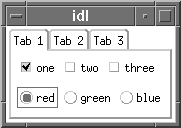

The WIDGET_TAB function is used to create a tab widget. Tab widgets present a display area on which different pages (base widgets and their children) can be displayed by selecting the appropriate tab — that is, selecting a tab displays the contents of a specified base widget within the tab widget. The titles of the tabs are supplied as the values of the TITLE keyword for each of the tab widget’s child base widgets.
|
 |
For a more detailed discussion of the tab widget, along with examples, see About Tab Widgets .
Result = WIDGET_TAB( Parent [, / ALIGN_BOTTOM | , / ALIGN_CENTER | , / ALIGN_LEFT | , / ALIGN_RIGHT | , / ALIGN_TOP ] [, EVENT_FUNC = string ] [, EVENT_PRO = string ] [, FUNC_GET_VALUE = string ] [, GROUP_LEADER = widget_id ] [, KILL_NOTIFY = string ] [, LOCATION ={0 | 1 | 2 | 3}] [, MULTILINE =0 | 1 (Windows) or num tabs per row (Motif)] [, / NO_COPY ] [, NOTIFY_REALIZE = string ] [, PRO_SET_VALUE = string ] [, SCR_XSIZE = width ] [, SCR_YSIZE = height ] [, / SENSITIVE ] [, TAB_MODE = value ] [, / TRACKING_EVENTS ] [, UNAME = string ] [, UNITS ={0 | 1 | 2}] [, UVALUE = value ] [, XOFFSET = value ] [, XSIZE = value ] [, YOFFSET = value ] [, YSIZE = value ] )
The returned value of this function is the widget ID of the newly-created tab widget.
The widget ID of the parent for the new tab widget.
Note: Only base widgets can be the parent of a tab widget.
Set this keyword to align the new widget with the bottom of its parent base. To take effect, the parent must be a ROW base.
Set this keyword to align the new widget with the center of its parent base. To take effect, the parent must be a ROW or COLUMN base. In ROW bases, the new widget will be vertically centered. In COLUMN bases, the new widget will be horizontally centered.
Set this keyword to align the new widget with the left side of its parent base. To take effect, the parent must be a COLUMN base.
Set this keyword to align the new widget with the right side of its parent base. To take effect, the parent must be a COLUMN base.
Set this keyword to align the new widget with the top of its parent base. To take effect, the parent must be a ROW base.
A string containing the name of a function to be called by the WIDGET_EVENT function when an event arrives from a widget in the widget hierarchy rooted at the newly-created widget.
A string containing the name of a procedure to be called by the WIDGET_EVENT function when an event arrives from a widget in the widget hierarchy rooted at the newly-created widget.
A string containing the name of a function to be called when the GET_VALUE keyword to the WIDGET_CONTROL procedure is called for this widget. Using this technique allows you to change the value that should be returned for a widget. Compound widgets use this ability to define their values transparently to the user.
The widget ID of an existing widget that serves as group leader for the newly-created widget. When a group leader is killed, for any reason, all widgets in the group are also destroyed.
A given widget can be in more than one group. The WIDGET_CONTROL procedure can be used to add additional group associations to a widget. You cannot remove a widget from an existing group.
Set this keyword to a string that contains the name of a procedure to be called automatically when the specified widget dies. Each widget is allowed a single such “callback” procedure. It can be removed by setting the routine to an empty string ( '' ).
The callback routine is called with the widget identifier as its only argument. At that point, the widget identifier can only be used with the WIDGET_CONTROL procedure to get or set the user value. All other requests that require a widget ID are disallowed for the target widget. The callback is not issued until the WIDGET_EVENT function is called.
Set this keyword equal to an integer that specifies which edge of the tab widget will contain the tabs. The possible values are:
|
0 |
The tabs are placed along the top of the widget, which is the default behavior. |
|
1 |
The tabs are placed along the bottom of the widget. |
|
2 |
The tabs are placed along the left edge of the widget. The text label for each tab is displayed vertically. On Windows platforms, setting the keyword to this value implies the MULTILINE keyword. |
|
3 |
The tabs are placed along the right edge of the widget. The text label for each tab is displayed vertically. On Windows platforms, setting the keyword to this value implies the MULTILINE keyword. |
This keyword controls how tabs appear on the tab widget when all of the tabs do not fit on the widget in a single row. This keyword behaves differently on Windows and Motif systems.
Set this keyword to cause tabs to be organized in a multiline display when the width of the tabs exceeds the width of the largest child base widget. If possible, IDL will create tabs that display the full tab text.
If MULTILINE = 0 and LOCATION = 0 or 1, tabs that exceed the width of the largest child base widget are shown with scroll buttons, allowing the user to scroll through the tabs while the base widget stays immobile.
If LOCATION = 2 or 3, a multiline display is always used if the tabs exceed the height of the largest child base widget.
Note: The width or height of the tab widget is based on the width or height of the largest base widget that is a child of the tab widget. The text of the tabs (the titles of the tab widget’s child base widgets) may be truncated even if the MULTILINE keyword is set.
Set this keyword equal to an integer that specifies the maximum number of tabs to display per row in the tab widget. If this keyword is not specified (or is explicitly set equal to zero) all tabs are placed in a single row.
Note: The width or height of the tab widget is based on the width or height of the largest base widget that is a child of the tab widget. The text of the tabs (the titles of the tab widget’s child base widgets) is never truncated in order to make the tabs fit the space available. However, tab text may be truncated if the text of a single tab exceeds the space available. If MULTILINE is set to any value other than one, some tabs may not be displayed.
Usually, when setting or getting widget user values, either at widget creation or using the SET_UVALUE and GET_UVALUE keywords to WIDGET_CONTROL, IDL makes a second copy of the data being transferred. Although this technique is fine for small data, it can have a significant memory cost when the data being copied is large.
If the NO_COPY keyword is set, IDL handles these operations differently. Rather than copying the source data, it takes the data away from the source and attaches it directly to the destination. This feature can be used by compound widgets to obtain state information from a UVALUE without all the memory copying that would otherwise occur. However, it has the side effect of causing the source variable to become undefined. Upon a set operation (using the UVALUE keyword to WIDGET_TAB or the SET_UVALUE keyword to WIDGET_CONTROL), the variable passed as value becomes undefined. Upon a get operation (GET_UVALUE keyword to WIDGET_CONTROL), the user value of the widget in question becomes undefined.
Set this keyword to a string containing the name of a procedure to be called automatically when the specified widget is realized. This callback occurs just once (because widgets are realized only once). Each widget is allowed a single callback procedure. This callback procedure can be removed by setting the routine name to an empty string ( '' ). The callback routine is called with the widget ID as its only argument.
A string containing the name of a procedure to be called when the SET_VALUE keyword to the WIDGET_CONTROL procedure is called for this widget. See the description of the PRO_SET_VALUE keyword to WIDGET_CONTROL for information on using this keyword.
Set this keyword to the desired screen width of the widget, in units specified by the UNITS keyword (pixels are the default). In many cases, setting this keyword is the same as setting the XSIZE keyword.
Set this keyword to the desired screen height of the widget, in units specified by the UNITS keyword (pixels are the default). In many cases, setting this keyword is the same as setting the YSIZE keyword.
Set this keyword to control the initial sensitivity state of the widget.
If SENSITIVE is zero, the widget becomes insensitive. If nonzero, it becomes sensitive. When a widget is sensitive, it has normal appearance and can receive user input. For example, a sensitive button widget can be activated by moving the mouse cursor over it and pressing a mouse button. When a widget is insensitive, it indicates the fact by changing its appearance, looking disabled, and it ignores any input.
Sensitivity can be used to control when a user is allowed to manipulate the widget.
Note: Some widgets do not change their appearance when they are made insensitive, but they cease generating events.
After creating the widget hierarchy, you can change the sensitivity state using the SENSITIVE keyword with WIDGET_CONTROL .
Set this keyword to one of the values shown in the table below to determine how the widget hierarchy can be navigated using the Tab key. The TAB_MODE setting is inherited by lower-level bases and child widgets from the parent WIDGET_BASE unless it is explicitly set on an individual widget. If the TAB_MODE value of the widget differs from that of the base, the setting on the widget will be respected when the widget has focus. For example, if a base does not support tabbing, but an individual child widget does support tabbing, this functionality will be enabled when the child widget has focus.
Note: It is not possible to tab to disabled (SENSITIVE=0) or hidden (MAP=0) widgets.
Valid settings are:
|
0 |
Disable navigation onto or off of the widget. This is the default unless the TAB_MODE has been set on a parent base. Child widgets automatically inherit the tab mode of the parent base as described in Inheriting the TAB_MODE Value . |
|
1 |
Enable navigation onto and off of the widget. |
|
2 |
Navigate only onto the widget. |
|
3 |
Navigate only off of the widget. |
Note: In widget applications on the UNIX platform, the Motif library controls what widgets are brought into and released from focus using tabbing. The TAB_MODE keyword value is always zero, and any attempt to change it is ignored when running a widget application on the UNIX platform. Tabbing behavior may vary significantly between UNIX platforms; do not rely on a particular behavior being duplicated on all UNIX systems.
When a WIDGET_TAB widget receives focus through tabbing, the tab title is outlined. Navigate to other tabs using the End key, Home key, or the right and left arrow keys to switch focus between the tabs. Pressing the Tab key brings into focus the first child widget on the tab capable of receiving focus. On UNIX, the Motif library controls tabbing functionality
After creating the widget hierarchy, you can change tabbing support using the WIDGET_CONTROL procedure’s TAB_MODE keyword, or query a widget’s support for tabbing using the WIDGET_INFO procedure’s TAB_MODE keyword.
See Tabbing in Widget Applications for usage details and examples.
Set this keyword to cause widget tracking events to be issued for the widget whenever the mouse pointer enters or leaves the region covered by that widget. For the structure of tracking events, see TRACKING_EVENTS in the documentation for WIDGET_BASE.
Set this keyword to a string, which is used to identify the widget in your code. You can associate a name with each widget in a specific hierarchy, and then use that name to query the widget hierarchy and get the correct widget ID.
To query the widget hierarchy, use the WIDGET_INFO with the FIND_BY_UNAME keyword. The UNAME should be unique to the widget hierarchy because the FIND_BY_UNAME keyword returns the ID of the first widget with the specified name.
Set this keyword to specify the units used when supplying measurements or position values. Set UNITS equal to 0 (zero) to specify that all measurements are in pixels (this is the default), to 1 (one) to specify that all measurements are in inches, or to 2 (two) to specify that all measurements are in centimeters. This keyword does not change the units used in a widget event structure or in most of the fields of the geometry structure returned by WIDGET_INFO.
The user value to be assigned to the widget.
Each widget can contain a user-specified value of any data type and organization. This value is not used by the widget in any way, but exists entirely for the convenience of the IDL programmer. This keyword allows you to set this value when the widget is first created.
If UVALUE is not present, the widget’s initial user value is undefined.
The horizontal offset of the widget in units specified by the UNITS keyword (pixels are the default) relative to its parent. This offset is specified relative to the upper left corner of the parent widget.
Specifying an offset relative to a row or column major base widget does not work because those widgets enforce their own layout policies. This keyword is primarily of use relative to a plain base widget. You should avoid using this style of widget programming.
The width of the widget in units specified by the UNITS keyword (pixels are the default). Most widgets attempt to size themselves to fit the situation. However, if the desired effect is not produced, use this keyword to override it. This keyword is only a hint to the toolkit and may be ignored in some situations.
The vertical offset of the widget in units specified by the UNITS keyword (pixels are the default) relative to its parent. This offset is specified relative to the upper left corner of the parent widget.
Specifying an offset relative to a row or column major base widget does not work because those widgets enforce their own layout policies. This keyword is primarily of use relative to a plain base widget. You should avoid using this style of widget programming.
The height of the widget in units specified by the UNITS keyword (pixels are the default). Most widgets attempt to size themselves to fit the situation. However, if the desired effect is not produced, use this keyword to override it. This keyword is only a hint to the toolkit and may be ignored in some situations.
A number of keywords to the WIDGET_CONTROL affect the behavior of tab widgets. In addition to those keywords that affect all widgets, the following keywords are particularly useful: BASE_SET_TITLE , SET_TAB_CURRENT , SET_TAB_MULTILINE .
Some keywords to the WIDGET_INFO return information that applies specifically to tab widgets. In addition to those keywords that apply to all widgets, the following keywords are particularly useful: STRING_SIZE , TAB_CURRENT , TAB_MULTILINE , TAB_NUMBER .
Tab widgets generate events when a new tab is selected. The event structure returned by the WIDGET_EVENT function is defined by the following statement:
{WIDGET_TAB, ID:0L, TOP:0L, HANDLER:0L, TAB:0L}
ID is the widget ID of the button generating the event. TOP is the widget ID of the top level widget containing ID. HANDLER contains the widget ID of the widget associated with the handler routine. TAB returns the zero-based index of the tab selected.
|
5.6 |
Introduced |
|
6.1 |
Added TAB_MODE keyword |